This image is of a loopy that shows how something small can affect the enviornment.
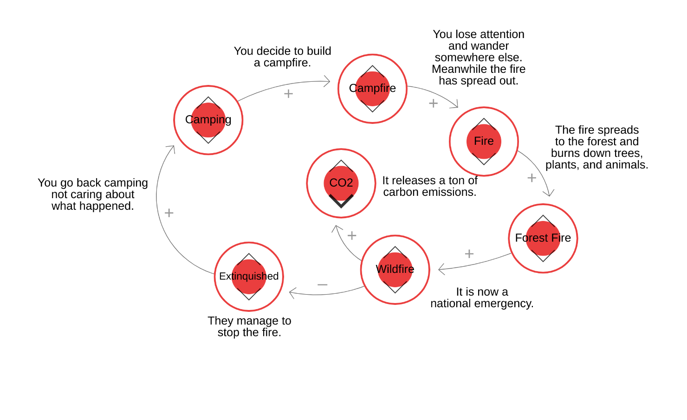https://ncase.me/loopy/v1.1/?data=[[[3,440,250,0.5,%22Camping%22,0],[4,723,196,0.5,%22Campfire%22,0],[5,915,287,0.5,%22Fire%22,0],[6,762,508,0.5,%22Wildfire%22,0],[7,1017,454,0.5,%22Forest%2520Fire%22,0],[8,669,359,0.5,%22CO2%22,0],[9,510,520,0.5,%22Extinquished%22,0]],[[3,4,35,1,0],[4,5,39,1,0],[5,7,55,1,0],[7,6,19,1,0],[6,8,51,1,0],[6,9,37,-1,0],[9,3,124,1,0]],[[568,152,%22You%2520decide%2520to%2520build%250Aa%2520campfire.%22],[906,153,%22You%2520lose%2520attention%250Aand%2520wander%250Asomewhere%2520else.%250AMeanwhile%2520the%2520fire%250Ahas%2520spread%2520out.%22],[1110,308,%22The%2520fire%2520spreads%250Ato%2520the%2520forest%2520and%250Aburns%2520down%2520trees%252C%250Aplants%252C%2520and%2520animals.%22],[912,567,%22It%2520is%2520now%2520a%250Anational%2520emergency.%22],[822,375,%22It%2520releases%2520a%2520ton%2520of%250Acarbon%2520emissions.%22],[511,617,%22They%2520manage%2520to%250Astop%2520the%2520fire.%22],[241,389,%22You%2520go%2520back%2520camping%250Anot%2520caring%2520about%250Awhat%2520happened.%22]],10%5D

Our character is on ther way to school
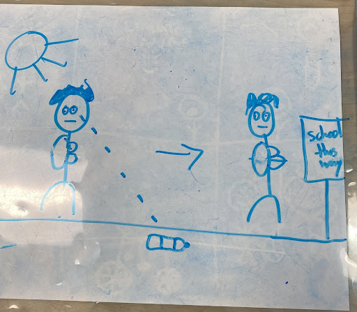Our character comes across a water bottle, after a moment he decides not to pick it up.
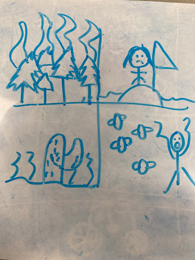All of a sudden, the scene cuts to eviornmental issues such as droughts, rising sea levels, and forest fires.
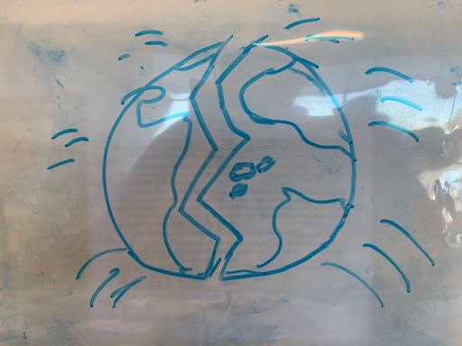The scene then cuts to the earth, the enviornment has been affected so much that it can take no more and breaks in half.
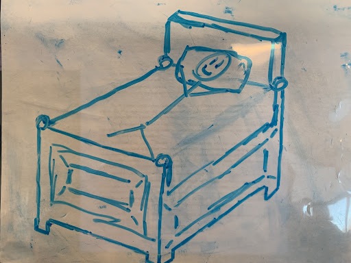Our character wakes up and realizes that it was all just a nightmare.
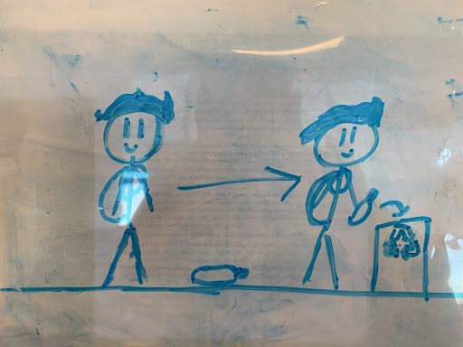Our chracter is on their way to school again(this time for real) and sees a water bottle on the floor, this time he decides to pick it up chnaging the outcome.
These are the characters that we used in our animation.(We really only used one of them).
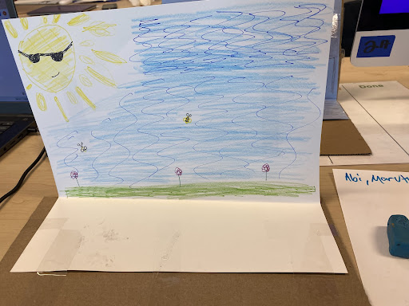This was one of the two sets and this one was to show that he was outside on his way to school.
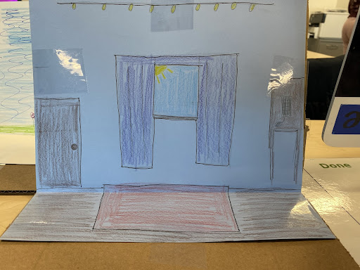This is the second set and it shows the charactrers bedroom where he woke up from his nightmare.
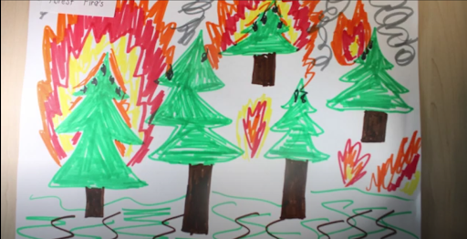This image shows one of the results of the enviornmental crisis, being forest fires
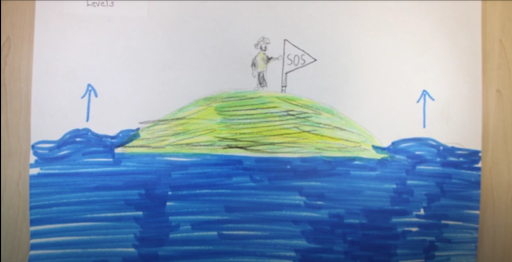This image shows another result of the enviornmental crisis, being rising sea levels
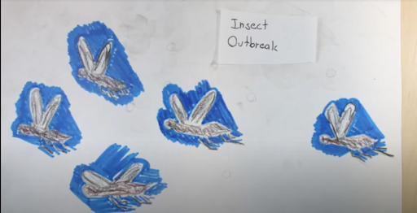This image shows another result of the enviornmental crisis, being insect infestation
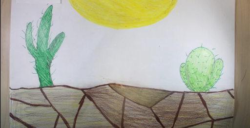This image shows another result of the enviornmental crisis, being droughts
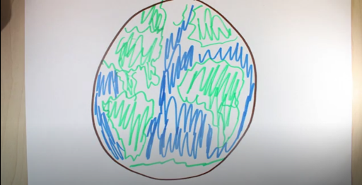This image shows the Earth from outer space
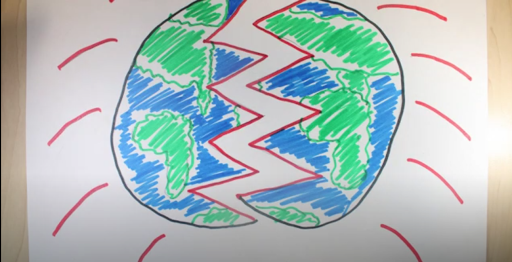This image shows the Earth breaking in half after all thats been going on